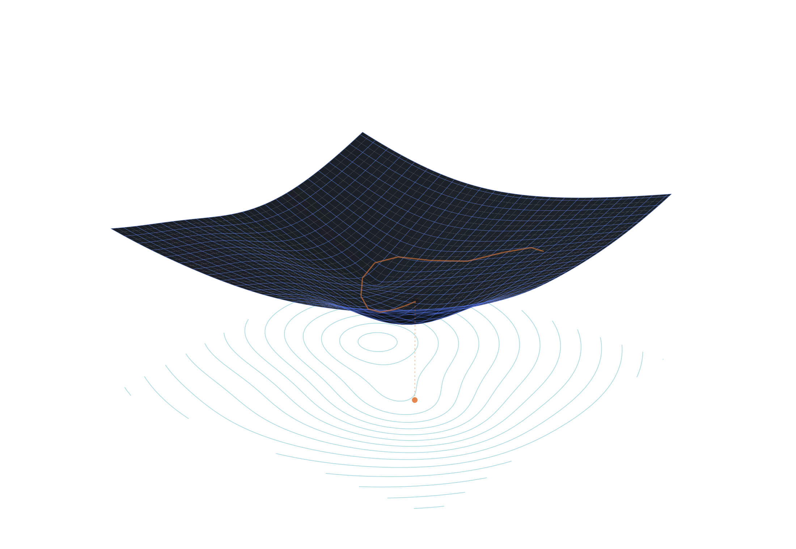
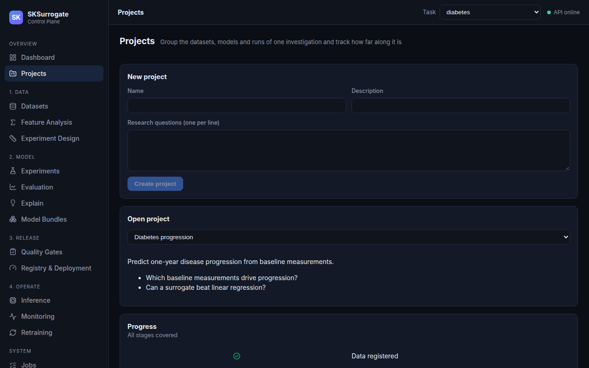
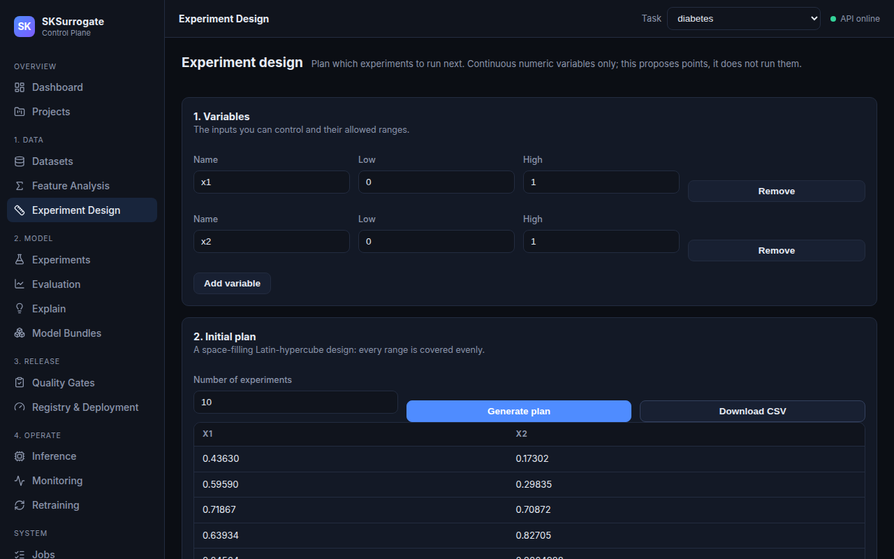
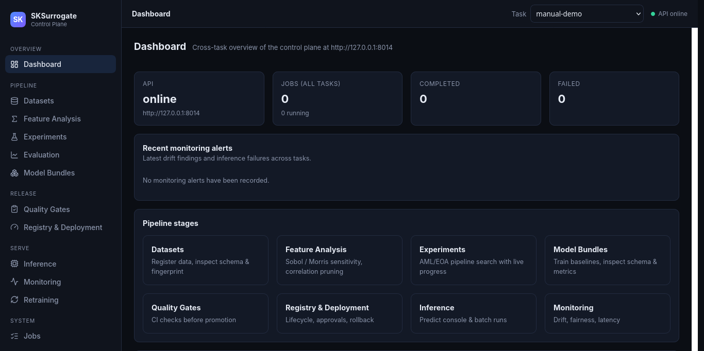
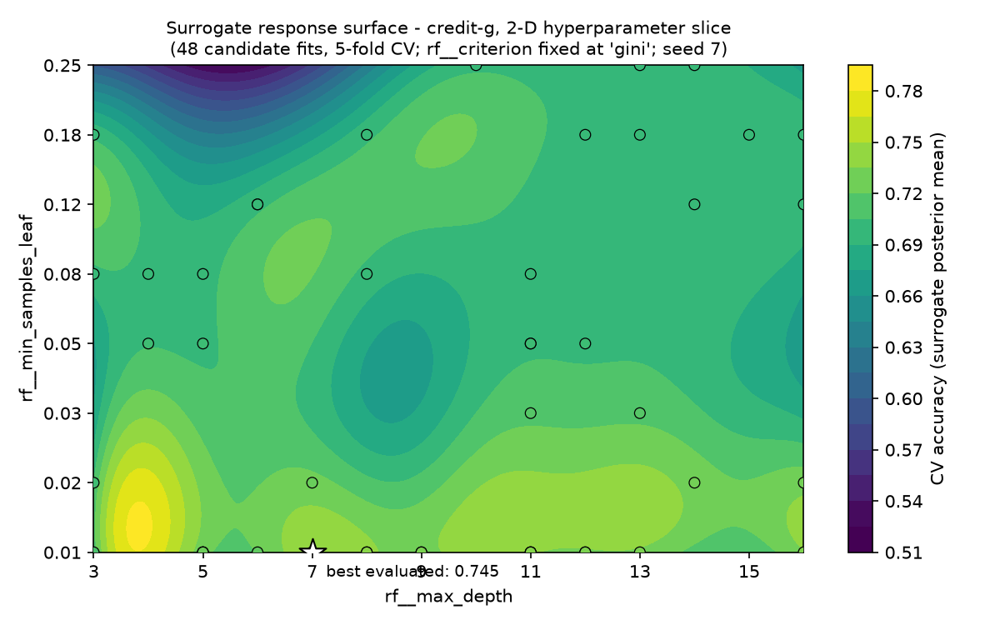

Search
Surrogate-guided + evolutionary pipeline search with every evaluation recorded.
Learn the surface before you spend another experiment. SKSurrogate searches hyperparameters and pipeline structure with a surrogate response surface — then proves the result: nested cross-validation, conformal intervals, Sobol and Morris sensitivity. From dataset registration to monitored deployment, every run keeps its data identity and evaluation record.

Surrogate-guided + evolutionary pipeline search with every evaluation recorded.
Nested CV, paired comparisons, split-conformal intervals and coverage checks.
PDP, ALE, permutation importance, row-level contributions; Sobol / Morris sensitivity.
Fingerprinted data identity, drift-aware model versions, retrain triggers.
The surrogate layer explores pipeline structure and hyperparameter ranges jointly; the tuner layer refines within a local neighborhood of that proposal. Both record every evaluation, so the search itself is an auditable artifact.

A project groups data partitions, model bundles and jobs around its research question. Partitions carry schema and fingerprint; hypotheses move through a status lifecycle — proposed, under investigation, supported, contradicted or inconclusive — with an append-only history. Evidence records snapshot the state of each artifact beside the claim it supports.

For expensive experiments — lab or physical runs where you choose what to sample rather than score existing data — SKSurrogate proposes where to evaluate next: a space-filling Latin-hypercube plan plus GP-lower-confidence-bound acquisition over past results. Export the plan as CSV and run it.
Permutation importance, partial dependence and ALE for a stored model bundle say which features drive its predictions globally; an exact row-level explanation reconstructs one prediction from its baseline as ordered feature contributions. Variance-based sensitivity — Sobol, Morris, moment-independent δ — says which inputs dominate the output variance, so an expensive model can be pruned or trusted on evidence.

The tuner records the identity of the data it optimized, so drift is detectable before inference rather than after a bad prediction.
Metrics are checked against declared thresholds; a bundle reaches the registry only when its evidence passes.
Estimators, pipelines and cross-validators are stock scikit-learn — nothing to migrate away from later.
Local API or a single Docker Compose profile on one port (8013); the API key is optional.
| dataset | SRS + RBF-GP | no surrogate | random | Optuna-TPE |
|---|---|---|---|---|
| arrhythmia | 0.7020 | 0.6910 | 0.6941 | 0.7036 |
| credit-g | 0.7423 | 0.7391 | 0.7405 | 0.7436 |
| galaxy3 | 0.6473 | 0.6448 | 0.6484 | 0.6507 |
| ionosphere | 0.9352 | 0.9347 | 0.9347 | 0.9337 |
| optdigits | 0.9403 | 0.9392 | 0.9380 | 0.9405 |
| spambase | 0.9280 | 0.9269 | 0.9272 | 0.9286 |

$ pip install sksurrogate # v0.2.0, PyPI (v0.3.0 at launch) $ python -m benchmarks.run --dataset all --budget 30 # full five-method suite (~1–3 h laptop-scale) $ python -m benchmarks.dtrack.d2_compare # the regime-map study
| objective family | Hilbert poly | RBF-GP | Random forest |
|---|---|---|---|
| polynomial (in-span) | 14/18 | 2 | 2 |
| Gaussian bump | 2 | 10 | 6 |
| rational | 3 | 5 | 10 |
| trigonometric | 0 | 1 | 17 |
SurrogateRandomCV is a BaseSearchCV subclass — it slots into any scikit-learn pipeline and estimator without changing your code.
Fully self-hosted: one compose profile, no external service required; the API key is optional. MIT-licensed, free to use.
Benchmark inputs and outputs carry DOIs — what you cite is exactly what we ran.
The honest caveat, from the benchmark post itself: these are small-budget results — seven seeds per cell, budgets of 30–60 evaluations, and a fixed-pipeline suite only three parameters wide. TPE remains competitive on flat landscapes at laptop budgets; SKSurrogate's edge is in stability, surface quality and evidence, not a universal accuracy crown.
$ pip install scikit-learn sksurrogate # Python — drop-in for RandomizedSearchCV (readme quick start, verbatim) from sklearn.svm import SVC from SKSurrogate import SurrogateRandomCV search = SurrogateRandomCV( SVC(), param_distributions={"C": (1e-3, 10.0), "kernel": ["poly", "rbf"], "degree": (1, 4)}, n_iter=30, ).fit(X, y) search.best_params_, search.best_score_
$ docker compose --profile prod up -d # control-plane UI + API on http://localhost:8013 — API key optional
MIT-licensed, scikit-learn-native, and built so the evaluation record travels with every model. Start with the drop-in tuner; keep the receipts when you ship it.
Get started GitHub ↗